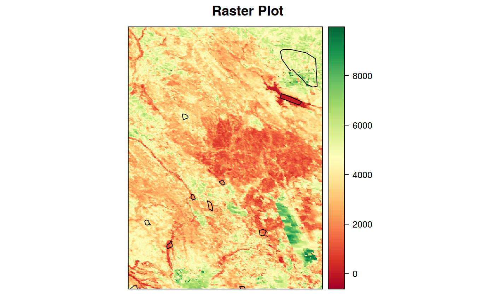
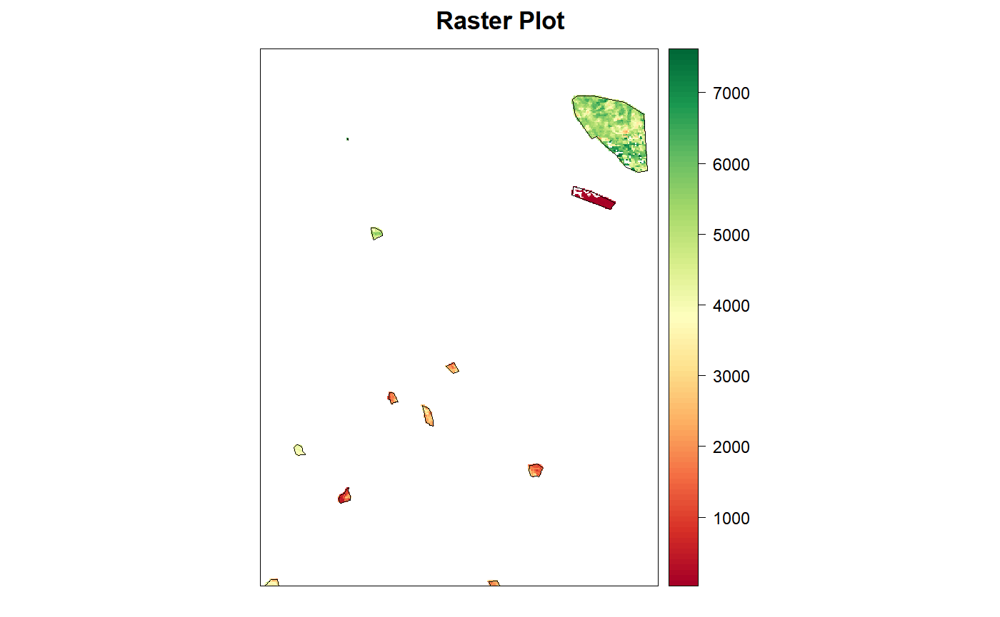

Masks a raster file or object on the basis of a vector file or object. Pixels not covered by the vector features are set to NoData. If the input raster is multi-band, the mask is automatically applied to all bands. An optional buffer can be applied to the input vector to allow a more "lenient" masking, or to remove also the borders of the vector.
mask_rast(in_rast, mask, crop = FALSE, buffer = NULL, out_type = "rastobject", out_filename = NULL, out_dtype = NULL, out_nodata = NULL, compress = "None", overwrite = FALSE, parallel = FALSE, cores = parallel::detectCores() - 2, verbose = TRUE)
| in_rast | Raster file or object inheriting class |
|---|---|
| mask | Vector file or object of class |
| crop |
|
| buffer |
|
| out_type |
|
| out_filename |
|
| out_dtype |
|
| out_nodata |
|
| compress |
|
| overwrite |
|
| parallel |
|
| cores |
|
| verbose |
|
object of class raster (if out_type == rastobj), or character
string corresponding to the filename of the created raster (if out_type ==
filename)
library(sprawl) library(sprawl.data) library(raster) in_polys <- read_vect(system.file("extdata/shapes","lc_polys.shp", package = "sprawl.data"), stringsAsFactors = T) in_rast <- raster::stack(system.file("extdata/MODIS_test", "EVIts_test.tif", package = "sprawl.data"))[[1]] in_polys <- sf::st_transform(in_polys, proj4string(in_rast)) masked <- mask_rast(in_rast, in_polys, verbose = FALSE)#>#>#>#>